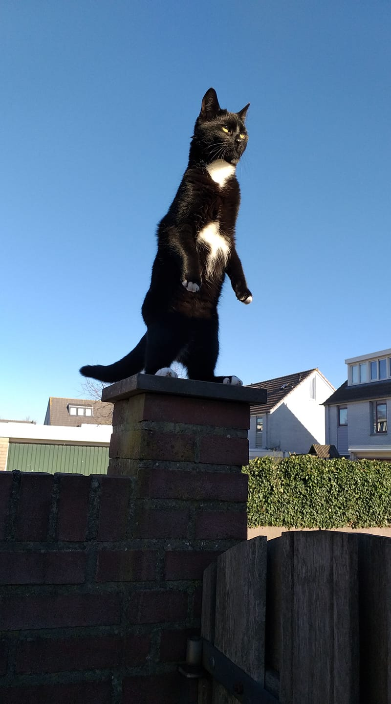

Kat
De wetenschappelijke naam van de kat werd in 1758 als Felis catus gepubliceerd door Carl Linnaeus in de tiende druk van Systema naturae. De naam van de wilde kat, waarvan de gedomesticeerde kat afstamt, werd in 1777 door Johann Christian von Schreber gepubliceerd als Felis silvestris. Van veruit de meeste dieren die gedomesticeerd zijn, is de wetenschappelijke naam afgeleid van de naam van de in het wild levende voorouders. In 2003 stelde de International Commission on Zoological Nomenclature in Opinion 2027 vast dat dit principe voor alle gedomesticeerde soorten gevolgd moet worden, en dat de naam van de wilde soort prioriteit heeft over die van de gedomesticeerde vorm, ook als die laatste eerder is gepubliceerd. Als de gedomesticeerde kat wordt beschouwd als een ondersoort van de wilde kat, dan is de correcte naam voor de soort Felis silvestris, en het trinomen voor de ondersoort Felis silvestris catus
Het skelet van een kat bestaat uit 250 botten. Net als alle andere carnivoren (vleeseters) zijn katten toegerust om op prooien te jagen en ze te verslinden. Katten hebben een vrij ronde kop en een korte snuit, grote ogen, gevoelige snorharen bij de bek en scherpe omhoogstaande oren. Ze hebben korte brede kaken met sterke knipkiezen en scherpe snijtanden. Katten hebben in het totaal 30 tanden. In de bovenkaak hebben ze 6 snijtanden, 2 hoektanden, 6 voorkiezen en 2 kiezen. In de onderkaak hebben ze 6 snijtanden, 2 hoektanden, 4 voorkiezen en 2 kiezen. Hun kaak kan geen kauwbeweging maken, de kat verscheurt zijn voedsel en gebruikt het zeer sterke maagzuur om het voedsel te verteren. De tong is bedekt met een laag ruwe papillen die goed van pas komt bij de persoonlijke verzorging. De tong van de poes is ruwer dan die van de kater; zo kan ze haar jongen beter wassen. Katten hebben vijf tenen aan beide voorpoten en vier tenen aan de achterpoten. De eerste teen bevindt zich wat hoger op de voorpoot dan de andere vier tenen. Deze eerste teen raakt tijdens het lopen de grond niet, maar wordt wel gebruikt bij de verzorging en bij het grijpen van een prooi. Aan de uiteinden van de tenen bevinden zich sterke, scherpe, gebogen klauwen. De nagels kunnen worden ingetrokken. Dit mechanisme is een onderscheidend kenmerk van de kattenfamilie Felidae. Door de nagels te scherpen aan een boom (in huis een krabplank of krabpaal) houdt een kat zijn nagels scherp. De zijkanten die uitgroeien komen dan los te zitten en worden met de tanden verwijderd waardoor de nagel op lengte blijft met een scherpe punt. Een kat heeft een lange staart die hij gebruikt om in evenwicht te blijven en bij sociale communicatie. Het bewegingsstelsel is extreem soepel met een flexibele ruggengraat, waardoor katten erg lenig zijn. Katten kunnen zich bij een val zo keren dat ze op de poten terechtkomen. Om "op zijn pootjes terecht te komen" moet de kat wel de ruimte en tijd krijgen om zich te keren.